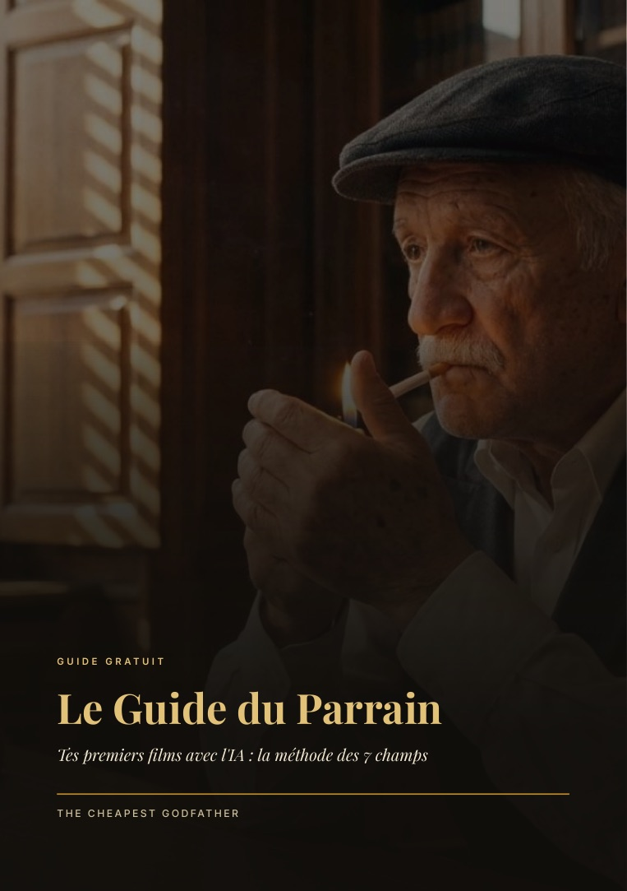

The Cheapest Godfather · Guide gratuit
Le Guide du Parrain
Tes premiers films avec l'IA : la méthode des 7 champs.

Télécharger le guide (PDF)- 18 pages, en français, gratuit
- La formule des 7 champs pour des prompts qui ressemblent à du cinéma
- Les 5 erreurs du débutant, le vocabulaire, deux prompts prêts à copier
Suis le compte Instagram pour la suite des aventures de Domenico.
Tous les personnages et lieux montrés sont fictifs et générés par IA. Les noms d'outils cités datent de novembre 2026. © The Cheapest Godfather. Partage le lien, pas le fichier. Aucune donnée n'est collectée sur cette page.